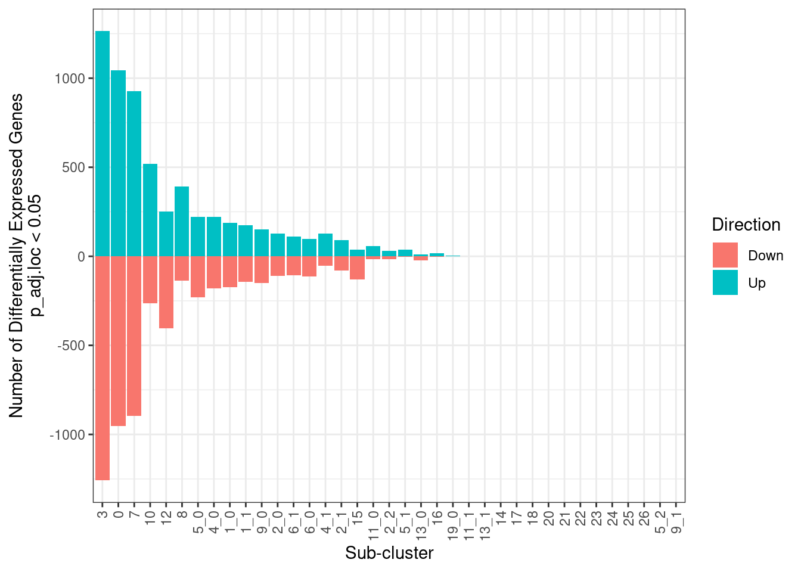

# Load libraries
library(presto)
library(Seurat)
library(tidyverse)
library(patchwork)
library(paletteer)
library(msigdbr)
library(ComplexHeatmap)
library(circlize)
library(muscat)
library(edgeR)
library(SingleCellExperiment)
library(DESeq2)
library(scuttle)
library(gprofiler2)
library(msigdbr)9 Skin: Differential expression analysis, Post vs Pre 3rd vaccination
9.1 Set up Seurat workspace
9.2 Load previous seurat object
merged.18279.skin.singlets <- readRDS("Skin_scRNA_Part8.rds")9.3 Run pseudobulk differential expression test with muscat
9.3.1 Convert Seurat object to SingleCellExperiment
merged.18279.skin.singlets[['RNA']] <- JoinLayers(merged.18279.skin.singlets[['RNA']])
merged.sce <- as.SingleCellExperiment(merged.18279.skin.singlets, assay="RNA")9.3.2 Prep coldata and create pseudobulk of raw counts by sub-cluster x sample
(mergedCondition.sce <- prepSCE(merged.sce,
kid = "sub.cluster",
gid = "Timepoint",
sid = "Sample",
drop=TRUE))class: SingleCellExperiment
dim: 61217 33397
metadata(1): experiment_info
assays(2): counts logcounts
rownames(61217): 5-8S-rRNA 5S-rRNA ... ZZEF1 ZZZ3
rowData names(0):
colnames(33397): P101_Skin_Pre3rd_2.5mgIpi_RNA_GCACATAAGTGCCATT
P101_Skin_Pre3rd_2.5mgIpi_RNA_GGAACTTGTCGCGGTT ...
P111_Skin_Post3rd_5mgIpi_RNA_ACGATGTTCCTAGGGC
P111_Skin_Post3rd_5mgIpi_RNA_GAACATCAGCCACGTC
colData names(3): cluster_id sample_id group_id
reducedDimNames(4): PCA UMAP.UNINTEGRATED INTEGRATED.HARMONY
UMAP.HARMONY
mainExpName: RNA
altExpNames(0):pb <- aggregateData(mergedCondition.sce,
assay = "counts",fun="sum",
by = c("cluster_id", "sample_id"))9.3.3 Construct design & contrast matrix to compare Post3rd to Pre3rd timepoints
ei <- metadata(mergedCondition.sce)$experiment_info
mm <- model.matrix(~0 + ei$group_id)
dim_name <- levels(ei$group_id)
dimnames(mm) <- list(ei$sample_id, dim_name)
contrast <- makeContrasts("Post3rd-Pre3rd", levels = mm)9.3.4 Run differential expression test via DESeq2
res <- pbDS(pb,
design = mm,
contrast = contrast,
method="DESeq2",
min_cells = 20,
verbose = FALSE)
# Combine results from all clusters into one tibble
df <- bind_rows(res$table$`Post3rd-Pre3rd`, .id = "sub.cluster") %>%
as_tibble()9.3.5 Show snippet of results from one cluster: upregulated genes in cluster 7
df %>%
dplyr::filter(p_adj.loc < 0.05 & sub.cluster=="7" & logFC > 0) %>%
dplyr::arrange(p_adj.loc) %>%
print(n=30)# A tibble: 927 × 11
sub.cluster gene cluster_id baseMean logFC lfcSE stat p_val p_adj.loc
<chr> <chr> <chr> <dbl> <dbl> <dbl> <dbl> <dbl> <dbl>
1 7 APOBEC3A 7 716. 4.29 0.422 10.2 3.21e-24 2.56e-20
2 7 ISG15 7 1378. 4.40 0.441 9.99 1.74e-23 6.95e-20
3 7 IFI6 7 648. 4.10 0.413 9.91 3.94e-23 1.05e-19
4 7 MX1 7 361. 3.94 0.434 9.09 1.03e-19 2.05e-16
5 7 OAS2 7 78.2 3.31 0.370 8.95 3.43e-19 5.48e-16
6 7 IRF7 7 310. 2.48 0.280 8.84 9.97e-19 1.33e-15
7 7 OAS1 7 131. 3.75 0.429 8.74 2.40e-18 2.73e-15
8 7 IFI35 7 164. 3.08 0.355 8.68 4.03e-18 3.59e-15
9 7 LY6E 7 822. 2.92 0.337 8.68 4.05e-18 3.59e-15
10 7 OAS3 7 65.9 3.21 0.390 8.24 1.78e-16 1.29e-13
11 7 XAF1 7 125. 2.78 0.353 7.88 3.26e-15 1.45e-12
12 7 SAMD9 7 56.3 3.20 0.411 7.77 7.74e-15 3.09e-12
13 7 IL15RA 7 35.5 2.68 0.345 7.76 8.59e-15 3.26e-12
14 7 PSME2 7 791. 1.62 0.210 7.72 1.16e-14 4.01e-12
15 7 LGALS9 7 352. 1.66 0.215 7.71 1.25e-14 4.15e-12
16 7 TNFSF10 7 295. 3.25 0.422 7.70 1.32e-14 4.21e-12
17 7 EPSTI1 7 289. 2.69 0.350 7.67 1.67e-14 5.12e-12
18 7 PML 7 109. 1.87 0.243 7.67 1.76e-14 5.21e-12
19 7 IFITM1 7 1481. 4.47 0.594 7.52 5.39e-14 1.34e-11
20 7 SERPING1 7 322. 2.71 0.362 7.49 7.13e-14 1.69e-11
21 7 UBE2L6 7 247. 2.13 0.285 7.48 7.22e-14 1.69e-11
22 7 IFIT3 7 82.2 6.32 0.846 7.47 8.24e-14 1.87e-11
23 7 PPA1 7 507. 2.46 0.330 7.46 8.44e-14 1.87e-11
24 7 TYMP 7 1459. 2.09 0.281 7.45 9.52e-14 2.05e-11
25 7 NMI 7 78.9 2.24 0.302 7.43 1.07e-13 2.24e-11
26 7 LYSMD2 7 80.9 1.83 0.246 7.43 1.10e-13 2.26e-11
27 7 ENSG000… 7 25.5 3.14 0.424 7.40 1.38e-13 2.75e-11
28 7 LGALS3BP 7 147. 2.38 0.323 7.38 1.59e-13 3.09e-11
29 7 SP110 7 139. 1.98 0.269 7.36 1.81e-13 3.43e-11
30 7 IFI44L 7 107. 3.88 0.529 7.33 2.27e-13 4.22e-11
# ℹ 897 more rows
# ℹ 2 more variables: p_adj.glb <dbl>, contrast <chr>9.3.6 Write differential expression results to tsv
write_tsv(df, "Skin_scRNA_PostVsPre3rd_DiffExp_results.tsv")9.3.7 Plot number of significant genes for all clusters
all_subclusts <- enframe(unique(merged.18279.skin.singlets$sub.cluster),name=NULL,value="sub.cluster")
df %>%
dplyr::filter(p_adj.loc < 0.05) %>%
group_by(sub.cluster) %>%
summarize(Up = count(logFC > 0),Down = (-1 * count(logFC < 0)),Total = (count(logFC > 0) + count(logFC < 0))) %>%
left_join(all_subclusts, ., by="sub.cluster") %>%
mutate(Up = replace_na(Up, 0), Down = replace_na(Down, 0), Total = replace_na(Total, 0)) %>%
pivot_longer(cols = c(Up,Down), names_to="Direction", values_to="NumberDE") %>%
ggplot(aes(x = reorder(sub.cluster,-Total), y = NumberDE, fill = Direction)) +
geom_col() +
theme_bw() +
xlab("Sub-cluster") +
ylab("Number of Differentially Expressed Genes\np_adj.loc < 0.05") +
theme(axis.text.x = element_text(angle = 90, vjust = 0.5, hjust=1))
9.4 Get session info
sessionInfo()R version 4.3.1 (2023-06-16)
Platform: x86_64-pc-linux-gnu (64-bit)
Running under: Rocky Linux 8.10 (Green Obsidian)
Matrix products: default
BLAS/LAPACK: /usr/lib64/libopenblasp-r0.3.15.so; LAPACK version 3.9.0
locale:
[1] LC_CTYPE=en_US.UTF-8 LC_NUMERIC=C
[3] LC_TIME=en_US.UTF-8 LC_COLLATE=en_US.UTF-8
[5] LC_MONETARY=en_US.UTF-8 LC_MESSAGES=en_US.UTF-8
[7] LC_PAPER=en_US.UTF-8 LC_NAME=C
[9] LC_ADDRESS=C LC_TELEPHONE=C
[11] LC_MEASUREMENT=en_US.UTF-8 LC_IDENTIFICATION=C
time zone: America/New_York
tzcode source: system (glibc)
attached base packages:
[1] stats4 grid stats graphics grDevices utils datasets
[8] methods base
other attached packages:
[1] gprofiler2_0.2.2 scuttle_1.10.3
[3] DESeq2_1.40.2 SingleCellExperiment_1.22.0
[5] SummarizedExperiment_1.30.2 Biobase_2.60.0
[7] GenomicRanges_1.52.1 GenomeInfoDb_1.36.4
[9] IRanges_2.34.1 S4Vectors_0.38.2
[11] BiocGenerics_0.46.0 MatrixGenerics_1.12.3
[13] matrixStats_1.2.0 edgeR_3.42.4
[15] limma_3.56.2 muscat_1.14.0
[17] circlize_0.4.15 ComplexHeatmap_2.16.0
[19] msigdbr_7.5.1 paletteer_1.6.0
[21] patchwork_1.3.0 lubridate_1.9.3
[23] forcats_1.0.0 stringr_1.5.1
[25] dplyr_1.1.4 purrr_1.0.2
[27] readr_2.1.5 tidyr_1.3.1
[29] tibble_3.2.1 ggplot2_3.4.4
[31] tidyverse_2.0.0 Seurat_5.1.0
[33] SeuratObject_5.0.2 sp_2.1-3
[35] presto_1.0.0 data.table_1.15.0
[37] Rcpp_1.0.12
loaded via a namespace (and not attached):
[1] spatstat.sparse_3.0-3 bitops_1.0-7
[3] httr_1.4.7 RColorBrewer_1.1-3
[5] doParallel_1.0.17 numDeriv_2016.8-1.1
[7] backports_1.4.1 tools_4.3.1
[9] sctransform_0.4.1 utf8_1.2.4
[11] R6_2.5.1 lazyeval_0.2.2
[13] uwot_0.1.16 mgcv_1.9-1
[15] GetoptLong_1.0.5 withr_3.0.0
[17] prettyunits_1.2.0 gridExtra_2.3
[19] SeuratWrappers_0.3.19 progressr_0.14.0
[21] cli_3.6.2 spatstat.explore_3.2-6
[23] fastDummies_1.7.3 sandwich_3.1-0
[25] labeling_0.4.3 mvtnorm_1.2-4
[27] spatstat.data_3.0-4 blme_1.0-5
[29] ggridges_0.5.6 pbapply_1.7-2
[31] R.utils_2.12.3 scater_1.28.0
[33] parallelly_1.37.0 generics_0.1.3
[35] shape_1.4.6 vroom_1.6.5
[37] gtools_3.9.5 ica_1.0-3
[39] spatstat.random_3.2-2 Matrix_1.6-4
[41] ggbeeswarm_0.7.2 fansi_1.0.6
[43] abind_1.4-5 R.methodsS3_1.8.2
[45] lifecycle_1.0.4 multcomp_1.4-25
[47] yaml_2.3.8 gplots_3.1.3.1
[49] Rtsne_0.17 promises_1.2.1
[51] crayon_1.5.2 miniUI_0.1.1.1
[53] lattice_0.22-5 beachmat_2.16.0
[55] cowplot_1.1.3 pillar_1.9.0
[57] knitr_1.45 rjson_0.2.21
[59] boot_1.3-29 estimability_1.4.1
[61] future.apply_1.11.1 codetools_0.2-19
[63] leiden_0.4.3.1 glue_1.7.0
[65] remotes_2.4.2.1 vctrs_0.6.5
[67] png_0.1-8 spam_2.10-0
[69] Rdpack_2.6 gtable_0.3.4
[71] rematch2_2.1.2 xfun_0.42
[73] rbibutils_2.2.16 S4Arrays_1.2.0
[75] mime_0.12 coda_0.19-4.1
[77] reformulas_0.4.0 survival_3.5-8
[79] iterators_1.0.14 ellipsis_0.3.2
[81] fitdistrplus_1.1-11 TH.data_1.1-2
[83] ROCR_1.0-11 nlme_3.1-164
[85] pbkrtest_0.5.2 bit64_4.0.5
[87] EnvStats_2.8.1 progress_1.2.3
[89] RcppAnnoy_0.0.22 TMB_1.9.10
[91] irlba_2.3.5.1 vipor_0.4.7
[93] KernSmooth_2.23-22 colorspace_2.1-0
[95] nnet_7.3-19 tidyselect_1.2.0
[97] emmeans_1.10.0 bit_4.0.5
[99] compiler_4.3.1 BiocNeighbors_1.18.0
[101] DelayedArray_0.26.7 plotly_4.10.4
[103] caTools_1.18.2 scales_1.3.0
[105] remaCor_0.0.18 lmtest_0.9-40
[107] digest_0.6.34 goftest_1.2-3
[109] spatstat.utils_3.0-4 minqa_1.2.6
[111] variancePartition_1.30.2 rmarkdown_2.25
[113] aod_1.3.3 RhpcBLASctl_0.23-42
[115] XVector_0.40.0 htmltools_0.5.7
[117] pkgconfig_2.0.3 lme4_1.1-35.1
[119] sparseMatrixStats_1.12.2 fastmap_1.1.1
[121] rlang_1.1.3 GlobalOptions_0.1.2
[123] htmlwidgets_1.6.4 shiny_1.8.0
[125] DelayedMatrixStats_1.22.6 farver_2.1.1
[127] zoo_1.8-12 jsonlite_1.8.8
[129] BiocParallel_1.34.2 R.oo_1.26.0
[131] BiocSingular_1.16.0 RCurl_1.98-1.14
[133] magrittr_2.0.3 modeltools_0.2-23
[135] GenomeInfoDbData_1.2.10 dotCall64_1.1-1
[137] munsell_0.5.0 viridis_0.6.5
[139] babelgene_22.9 reticulate_1.35.0
[141] stringi_1.8.3 zlibbioc_1.46.0
[143] MASS_7.3-60.0.1 flexmix_2.3-19
[145] plyr_1.8.9 parallel_4.3.1
[147] listenv_0.9.1 ggrepel_0.9.5
[149] deldir_2.0-2 splines_4.3.1
[151] tensor_1.5 hms_1.1.3
[153] locfit_1.5-9.8 igraph_2.0.2
[155] spatstat.geom_3.2-8 RcppHNSW_0.6.0
[157] ScaledMatrix_1.8.1 reshape2_1.4.4
[159] evaluate_0.23 BiocManager_1.30.22
[161] nloptr_2.0.3 tzdb_0.4.0
[163] foreach_1.5.2 httpuv_1.6.14
[165] RANN_2.6.1 polyclip_1.10-6
[167] future_1.33.1 clue_0.3-65
[169] scattermore_1.2 rsvd_1.0.5
[171] broom_1.0.5 xtable_1.8-4
[173] RSpectra_0.16-1 later_1.3.2
[175] viridisLite_0.4.2 lmerTest_3.1-3
[177] glmmTMB_1.1.10 beeswarm_0.4.0
[179] cluster_2.1.6 timechange_0.3.0
[181] globals_0.16.2